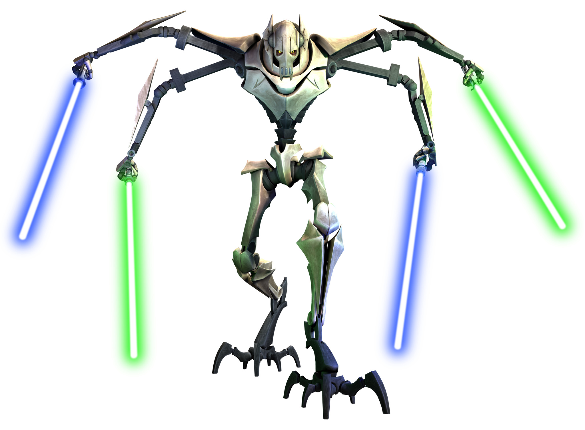

<!DOCTYPE html>
<html lang="en">
<head>
    <meta charset="UTF-8">
    <title>labrab03</title>
    <style>
        .flowers {
            background-image: url(fon.jpg);
            background-repeat: repeat;
        }

        .left {
            width: 30%;
            position: absolute;
        }

        .meedle {
            width: 40%;
            background: rgba(255, 255, 255, 0);
            margin-left: 30%;
        }

        .right {
            /*position: absolute;*/
            margin-top: 40%;
            margin-left: 79%;
        }

        .crop {
            margin-top: 300px;
            overflow: hidden;
            border: 15px solid yellow;
            float: left;
        }

        .crop2 {
            position: absolute;
            top: 300px;
            /*margin-top: 300px;*/
            overflow: hidden;
            border: 15px solid yellow;
            float: right;
        }

        .crop img {
            /* input values to crop the image: top, right, bottom, left */
            margin: -60px -920px -1220px -890px;
        }

        .crop2 img {
            /* input values to crop the image: top, right, bottom, left */
            margin: -60px -920px -1220px -890px;
        }

        .f_abs {
            text-indent: 40px;
        }

        .grivus {
            width: 40%;
            background: #80ff80;
            float: left;
        }

        .duku {
            width: 60%;
            background: indianred;
            display: inline-block;
            z-index: 2;
        }

        .sword {
            width: 100%;
            background: #b3b3ff;
            clear: both;
            position: relative;
            z-index: 3;
        }

        .lang {
            width: 60%;
            background: cornflowerblue;
            position: relative;
            z-index: 4;
        }

        .secret {
            /*width: 30%;*/
            /*background: hotpink;*/
            /*position: absolute;*/
            /*top: 35%;*/
            /*right: 5%;*/
            /*z-index: 1;*/

            width: 15%;
            background: hotpink;
            position: absolute;
            top: 45%;
            right: 42%;
            z-index: 1;

        }

        .date {
            background: lightgoldenrodyellow;
            padding: 5px;
            position: relative;
            z-index: 5;
            box-shadow: 5px 5px 1px rgba(0, 0, 0, 0.5);
        }

        .date#xy {
            margin-top: 8%;
            /*margin-left: 5%;*/
        }

        .date#xy2 {
            /*margin-top: 8%;*/
            /*top: 20px;*/
            /*left: 1200px;*/
        }

        .date#xy3 {
            position: absolute;
            top: 55%;
            left: 5%;
            /*top: 320px;*/
            /*left: 140px;*/
            /*margin-left: 78%;*/
        }
        .date#xy4 {
            position: absolute;
            top: 1%;
            right: 5%;
            /*top: 320px;*/
            /*left: 140px;*/
            /*margin-left: 78%;*/
        }
    </style>
</head>
<body class="flowers">

<aside class="left">
    <span class="date" id="xy3">
        28 Феврая 2016
    </span>
    <div class="crop">
        
    </div>
</aside>

<aside class="meedle">

    <div class="f_abs grivus">

        <span class="date" id="xy">
            14 Феврая 2016
        </span>
        Генерал Гривус (англ. General Grievous), настоящее имя Кимаен джай Шилал — мужчина, калишец, верховный
        главнокомандующий Армией дроидов Конфедерации независимых систем во времена Войн клонов.
        Родившийся на планете Кали и впервые проявивший свои незаурядный талант военачальника во время Хакской войны
        генерал
        Гривус, наряду с графом Дуку, Нутом Ганреем и Погглем Меньшим, был одним из лидеров сепаратистов.
        Гривус прославился своей ненавистью к джедаям и лично убил более ста из них, забрав себе в качестве трофеев их
        световые мечи.

    </div>

    <div class="f_abs duku">
        <span class="date" id="xy2">
        18 Феврая 2016
        </span>
        Дуку (англ. Dooku) — граф Серенно, мастер-джедай и лорд ситов,
        последний из двадцати мастеров, добровольно покинувших Орден джедаев.
        Его падаванами были Квай-Гон Джинн и Комари Воса. После перехода на
        Тёмную сторону Силы стал учеником Дарта Сидиуса и получил новое имя – Дарт Тиранус.
        Основал движение сепаратистов и стал лидером Конфедерации Независимых Систем (КНС).
        Погиб от руки Энакина Скайуокера во время второй битвы за Корусант в самом конце Войн клонов в возрасте 83 лет.
        Граф Дуку был превосходным фехтовальщиком: только Йода ,
        Оби-Ван Кеноби и Энакин Скайуокер могли противостоять ему. Дуку был мастером Макаши — второй формы боя на
        световых
        мечах.
        <br>
        <br>
        <br>
        <br>
    </div>

    <div class="f_abs sword">
        <div class="f_abs"><i>«Это оружие джедая. Не такое грубое и беспорядочное, как бластер, но элегантное оружие
            более
            цивилизованной эпохи»
            — Оби-Ван Кеноби(источник)</i>
        </div>

        <div class="f_abs"> Созданный сколь для элегантного боя, столь и для церемоний, световой меч был особенным
            оружием,
            сам образ
            которого
            был неразрывно связан с миром джедаев.
        </div>

        <div class="f_abs"> Это был клинок чистой энергии (или, точнее, плазмы[1]), испускаемой из рукояти, чаще всего
            созданный самим
            владельцем оружия исходя из его собственных нужд, требований и стиля. Из-за уникального баланса меча —
            сосредоточенности всего его веса в рукояти — было крайне сложно управляться с ним без особой подготовки. В
            руках
            мастеров, владеющих Силой, таких, как джедаи или их тёмные собратья ситы, световой меч внушал огромное
            уважение
            и
            даже страх. Умение владеть световым мечом означало наличие невероятного навыка и сосредоточенности,
            мастерскую
            ловкость и, как правило, гармонию с Силой.
        </div>
        <br>

        <div class="f_abs"> За тысячелетия использования световой меч стал знаковым атрибутом джедаев и их стремления
            поддерживать мир и
            вершить
            правосудие во всей галактике. Это восприятие сохранилось, несмотря на множество ранних конфликтов с ситами и
            тёмными
            джедаями, которые также владели этим оружием, часто называемым в народе лазерным мечом. В частности, именно
            так
            назвал световой меч Энакин Скайуокер, впервые увидев его у Квай-Гона Джинна.
        </div>
    </div>
    <aside class="f_abs lang">
        <div class="f_abs">
            Язы́к программи́рования — формальная знаковая система, предназначенная для записи компьютерных программ.
            Язык
            программирования определяет набор лексических, синтаксических и семантических правил, определяющих внешний
            вид
            программы и действия, которые выполнит исполнитель (обычно — ЭВМ) под её управлением.
        </div>
        <div class="f_abs">
            Со времени создания первых программируемых машин человечество придумало более восьми тысяч языков
            программирования
            (включая нестандартные, визуальные и эзотерические языки)[1]. Каждый год их число увеличивается. Некоторыми
            языками
            умеет пользоваться только небольшое число их собственных разработчиков, другие становятся известны миллионам
            людей.
            Профессиональные программисты могут владеть десятком и более разных языков программирования.
        </div>
        <div class="f_abs">
            Язык программирования предназначен для написания компьютерных программ, которые представляют собой набор
            правил,
            позволяющих компьютеру выполнить тот или иной вычислительный процесс, организовать управление различными
            объектами,
            и т. п. Язык программирования отличается от естественных языков тем, что предназначен для взаимодействия
            человека с
            ЭВМ, в то время как естественные языки используются для общения людей между собой. Большинство языков
            программирования использует специальные конструкции для определения и манипулирования структурами данных и
            управления процессом вычислений.
        </div>
    </aside>
    <aside class="f_abs secret">
        <div class="f_abs">
            -Видишь текст? - А он есть.
        </div>
        <div class="f_abs">
            Лучше впасть в нищету, голодать или красть,
            Чем в число блюдолизов презренных попасть.
            Лучше кости глодать, чем прельститься сластями
            За столом у мерзавцев, имеющих власть.
        </div>
        <div class="f_abs">
            Не оплакивай, смертный, вчерашних потерь,
            Дел сегодняшних завтрашней меркой не мерь,
            Ни былой, ни грядущей минуте не верь,
            Верь минуте текущей - будь счастлив теперь!
        </div>
        <div class="f_abs">
            Лживой книжной премудрости лучше бежать.
            Лучше с милой всю жизнь на лужайке лежать.
            До того как судьба твои кости иссушит -
            Лучше чашу без устали осушать!
        </div>
        <br>
        <br>
        <br>
        <br>
        <br>
        <br>
    </aside>
</aside>
<aside class="right">
    <div class="crop2">
                <span class="date" id="xy4">
        22 Феврая 2016
        </span>
        
    </div>
</aside>

<!--<span class="date" id="xy">-->
<!--14 Феврая 2016-->
<!--</span>-->
<!--<span class="date" id="xy2">-->
<!--18 Феврая 2016-->
<!--</span>-->
<!--<span class="date" id="xy3">-->
<!--22 Феврая 2016-->
<!--</span>-->
</body>
</html>